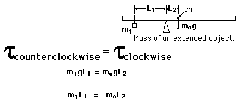

Determining Mass of RodThe mass of an extended object can be found by using the conditions for equilibrium of torques. If the object is first balanced to find its center of mass, then the entire weight of the object can be considered to act at that center of mass. If the object is then shifted a measured distance away from the center of mass and again balanced by hanging a known mass on the other side of the pivot point, the unknown mass of the object can be determined by balancing the torques. Since g appears on both sides of the equation, it can be factored out and just the masses and lengths used for the calculation. |
Index Torque equilibrium examples | ||
|
Go Back |